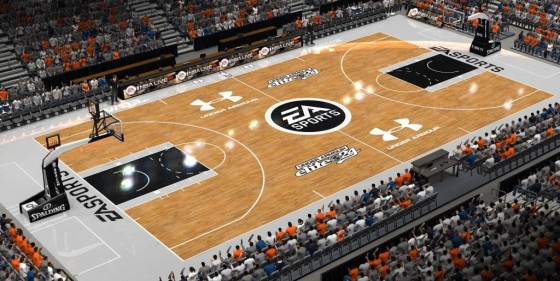

In basketball, the basketball court is the playing surface, consisting of a rectangular floor with tiles at either end. In professional or organized basketball, especially when played indoors, it is usually made out of a wood, often maple, and highly polished. Outdoor surfaces are generally made from standard paving materials such as concrete or asphalt.
Basketball courts come in different sizes and colors. In the NBA, the court is 94 feet (29 m) by 50 feet (15 m). Under International Basketball Federation (FIBA) rules,[1] the court is minutely smaller, measuring exactly 28 metres (92 ft) by 15 metres (49 ft). A high school court is slightly smaller, at 84 feet (26 m) by 50 feet (15 m). In amateur basketball, court sizes vary widely. The baskets are always 10 feet (3.0 m) above the floor (except possibly in youth competition). Basketball courts have a three-point arc at both baskets. A basket made from behind this arc is worth three points; a basket made from within this line, or with a player's foot touching the line is worth two points. The free-throw line, where one stands while taking a foul shot, is located within the three-point arc.